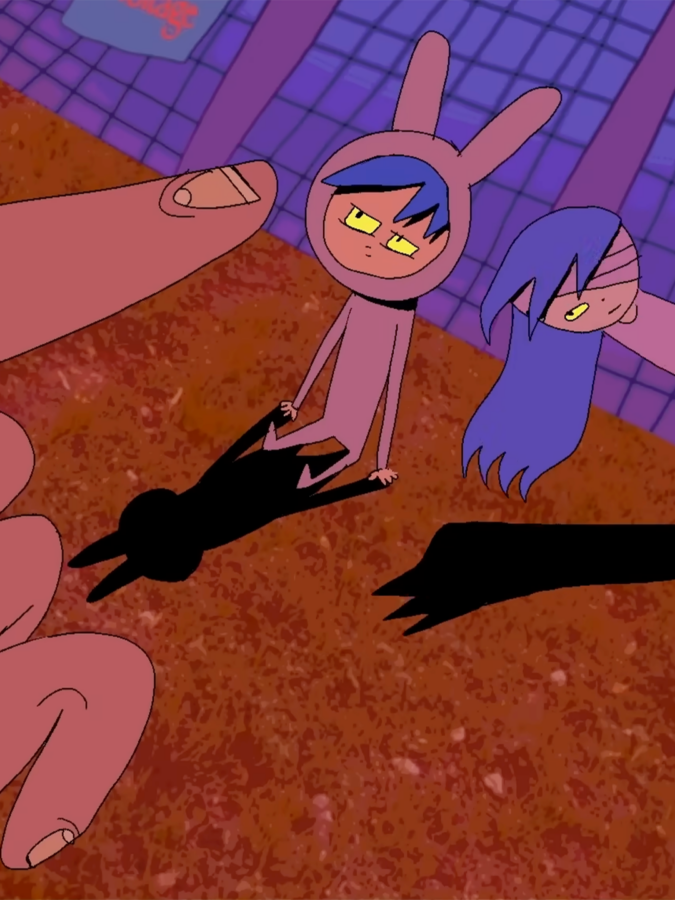

Conversations at the Edge | An Evening with Victoria Vincent
Los Angeles–based artist Victoria Vincent, who posts online as “vewn,” presents a survey of her zeitgeist-defining animations—from early viral hits to recent projects like Dirt Girls (2021) and Snooze Quest (2025)—acid-colored and blackly comic works that map the psychic fallout of life shaped by platforms, protocols, and perpetual crisis.
Followed by a conversation with Victoria Vincent and audience Q&A.
Presented in partnership with DePaul University’s School of Cinematic Arts.
ABOUT THE ARTIST
Victoria Vincent, known online as “vewn,” is a Los Angeles–based animator and filmmaker. Since 2015, she has released dozens of short independent films online, drawing a global audience to her darkly comic, emotionally charged explorations of anxiety, social isolation, online identity, and existential unease. Alongside her independent practice, Vincent has developed projects for Adult Swim, FOX, and Netflix’s We the People, among others.
CONVERSATIONS AT THE EDGE
Conversations at the Edge (CATE) is the School of the Art Institute of Chicago’s award-winning series for groundbreaking film and media art. Now in its 25th year, CATE is presented through a unique partnership between SAIC’s Department of Film, Video, New Media, and Animation; Video Data Bank; and the Siskel Film Center.
TICKETS